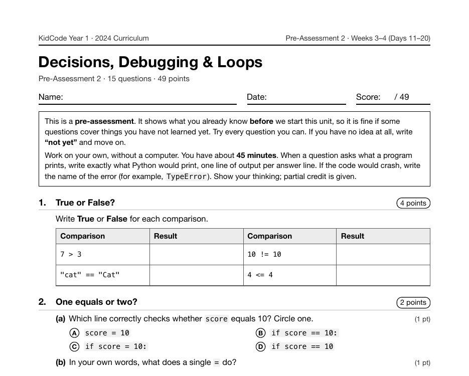

Project 2: Mystic Oracle
Mystic Oracle is Project 2, on Day 15 of Year 1. It closes a week about decisions (booleans, if/else, elif, and reading error messages) and introduces the first library students ever import: random.
What I taught that week
From the Year 1 curriculum, Week 3: Making Decisions
Day 11: Booleans & Comparisons. The bool type, comparison operators (==, !=, <, >, <=, >=), and the difference between = and ==. "Predict, Run, Explain" cards.
Day 12: if & else: Choosing a Path. Writing if and else blocks, colons, and indentation as Python's grammar. Fixing IndentationError. Practice: "Password Checker" and "Can You Ride?", a theme park height checker.
Day 13: elif, and, or, not. Multi-way choices with elif, combining conditions with and, or, and not, and placing an if inside another if. Practice: "Grade Calculator" and "Movie Night Picker".
Day 14: Bug Hunters: Debugging Skills. Reading error messages (SyntaxError, NameError, TypeError) from the bottom line up. Print debugging and stepping through code in Thonny. Lab: "Bug Zoo", ten broken programs to fix.
Day 15: Lab: Mystic Oracle. Project 2. A first library: import random, random.randint(), and random.choice(). A fortune- telling program with if/elif logic. Big idea: import borrows code someone else wrote.
What students built
18 students built an oracle. All of them use random.choice(), 61% also use random.randint(), and the median program has 3 elif branches deciding which answer to give. 44% went a step further and wrapped the oracle in a loop so it keeps answering until the player types quit, which the curriculum doesn't formally teach until the next week.
One student's program
This is one real submission, shown as the student wrote it apart from the removed name header. It was chosen by a fixed rule rather than for being the best: it is the submission closest to the project's median length among those that ran cleanly and contain nothing that could identify anyone.
import random
print('Merlin the Wizard stirs his bubbling cauldron three times...')
print("Ask me yes/no questions. Type 'quit' to leave.")
asked = 0
while True:
question = input("Your question: ")
if question.lower().strip() == "quit":
break
asked = asked + 1
roll = random.randint(1, 6)
if roll == 1:
answer = 'Without a doubt.'
elif roll == 2:
answer = 'Reply hazy, try again.'
elif roll == 3:
answer = 'Most likely yes.'
elif roll == 4:
answer = 'Do not count on it.'
elif roll == 5:
answer = 'It is certain.'
else:
answer = 'My sources say no.'
extra = random.choice(['That is my final answer.', 'Trust me.', 'I have been right before.'])
print(f"The cauldron declares: {answer} {extra}")
print(f"You asked {asked} questions. Merlin tips his pointy hat.")
A sample run of that program (the input was typed for this page)
Merlin the Wizard stirs his bubbling cauldron three times... Ask me yes/no questions. Type 'quit' to leave. Your question: Will it rain tomorrow? The cauldron declares: Do not count on it. That is my final answer. Your question: Should I learn Python? The cauldron declares: My sources say no. I have been right before. Your question: Is my code bug-free? The cauldron declares: Most likely yes. That is my final answer. Your question: quit You asked 3 questions. Merlin tips his pointy hat.
The worksheet for this unit
Each unit has a pre- and post-assessment written from the same curriculum. This is the first page of the pre-assessment for the unit this project sits in: Decisions, Debugging & Loops (Weeks 3–4 (Days 11–20), 15 questions).

Where it fits
The next project, Guess the Number Deluxe, keeps random and adds the loop properly. import itself turns into a whole unit in Year 2 (modules, your own module, pip) and a whole year in Year 3, when the library is spaCy.
Looking back
The big idea the curriculum attaches to this day is that import borrows code someone else wrote. It's an early place to put that idea, but it pays off: by Year 3 every program starts with an import that does more work than the rest of the file.